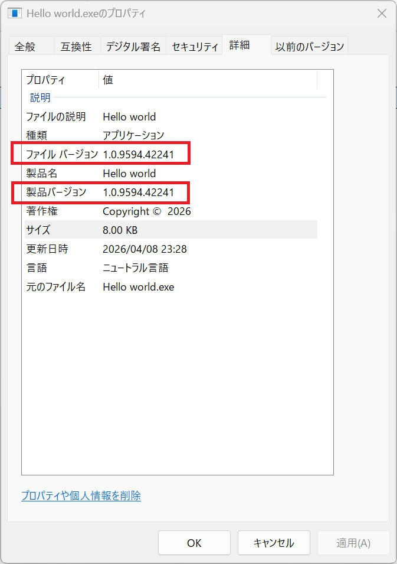
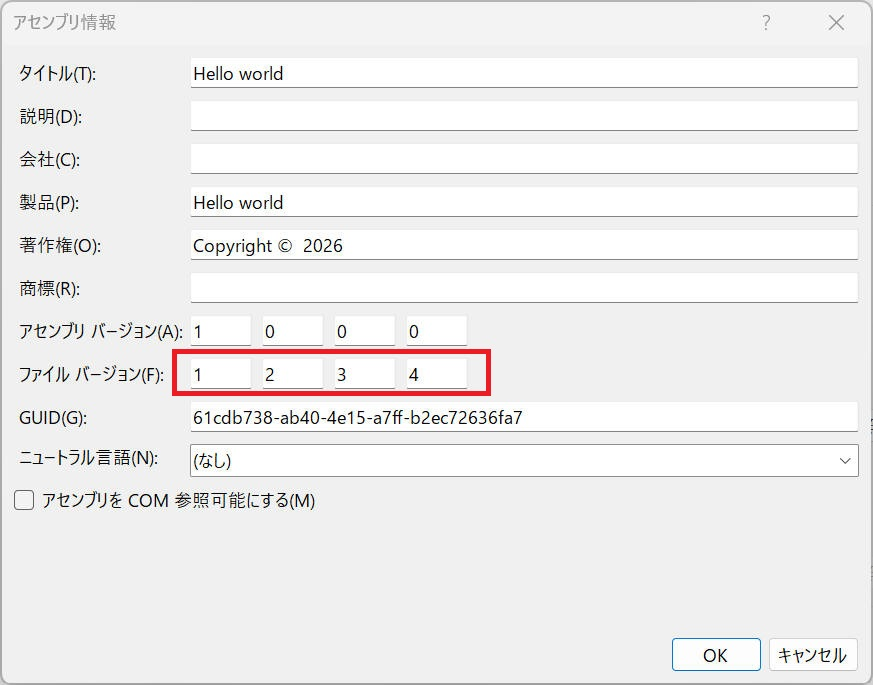
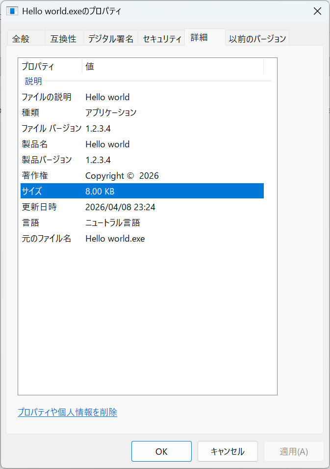
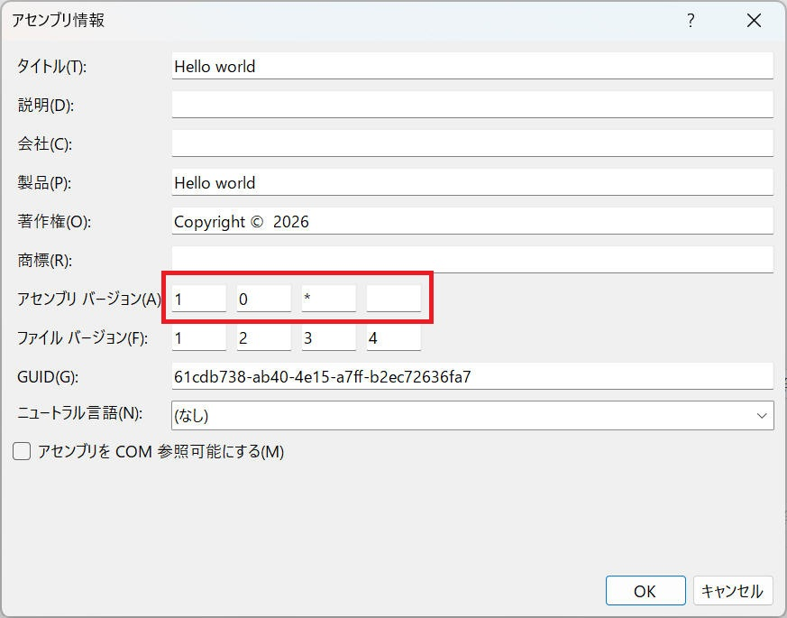
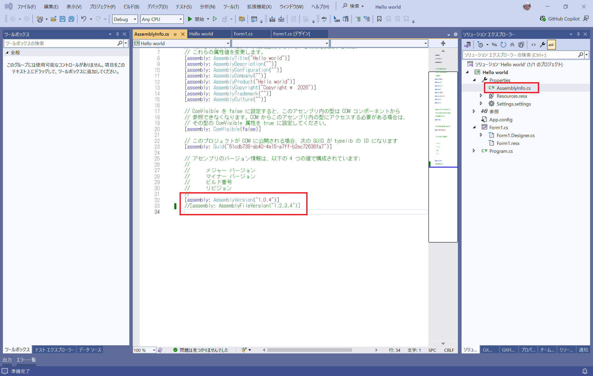

Microsoft Visual Studio に関する記載です。
バージョン番号指定を '1.0.*' とすることで、ビルド番号とリビジョン番号を自動的に採番する手順について記載します。

本ページで記載の内容は、下記環境で確認しています。
[評価環境]
| コンパイラ : | Visual Studio 2022 pro., | Version 17.14.29 (March 2026) |
| OS : | Windows11 home, | 25H2 |
WinForm (.NET Framework) のアプリを作成し、アセンブリ情報を確認します。
すると下図のようになっています。
ファイルバージョンの初期値は "1.0.0.0" でしたが、次の確認を目的にここでは "1.2.3.4" に変更しています。

アプリケーションをビルドしてプロパティを確認すると、下図のようになりました。
上記「ファイル バージョン」に記載の内容が 「ファイル バージョン」「製品バージョン」として使用されることがわかります。

ここで「アセンブリ バージョン」を下図のように変更します。

この状態でビルドすると、
error CS8357: 指定されたバージョン文字列 '1.0.*'
には、決定性と互換性のないワイルドカードが含まれています。バージョン文字列からワイルドカードを削除するか、このコンパイルの決定性を無効にしてください。
というメッセージを出力してビルドエラーになりました。
アセンブリバージョンを '1.0.*' とするには、コンパイルの決定性を無効にする必要があるようです。
コンパイルの決定性を無効にするには、プロジェクトの設定ファイル (xxx.csproj) をテキストエディタなどで開き、<Deterministic>
の設定を
<?xml version="1.0" encoding="utf-8"?>
<Project ToolsVersion="15.0" xmlns="http://schemas.microsoft.com/developer/msbuild/2003">
...
<PropertyGroup>
...
<Deterministic>false</Deterministic>
</PropertyGroup>
...
</Project>
これで正常にビルドできるようになりました。
しかし、残念ながらビルドでできたアセンブリに記載のバージョンは下図の通り、ファイルバージョンを適用されます。
"Properties/AssemblyInfo.cs" ファイルを開き、[assembly: AssemblyFileVersion("1.2.3.4")] の部分をコメントアウトします。

この状態でビルドすると、下図のようになりました。ビルド番号、リビジョン番号 が自動付与されるようになりました。
NOTE
ビルド番号は、2000/01/01 からの経過日です。
リビジョン番号は、現地時間の午前 0 時からの経過秒を 2 で割った値です。
設定可能な例：
設定不可な例：
本ページの情報は、特記無い限り下記 MIT ライセンスで提供されます。
| 2026-04-08 | - | 新規作成 |